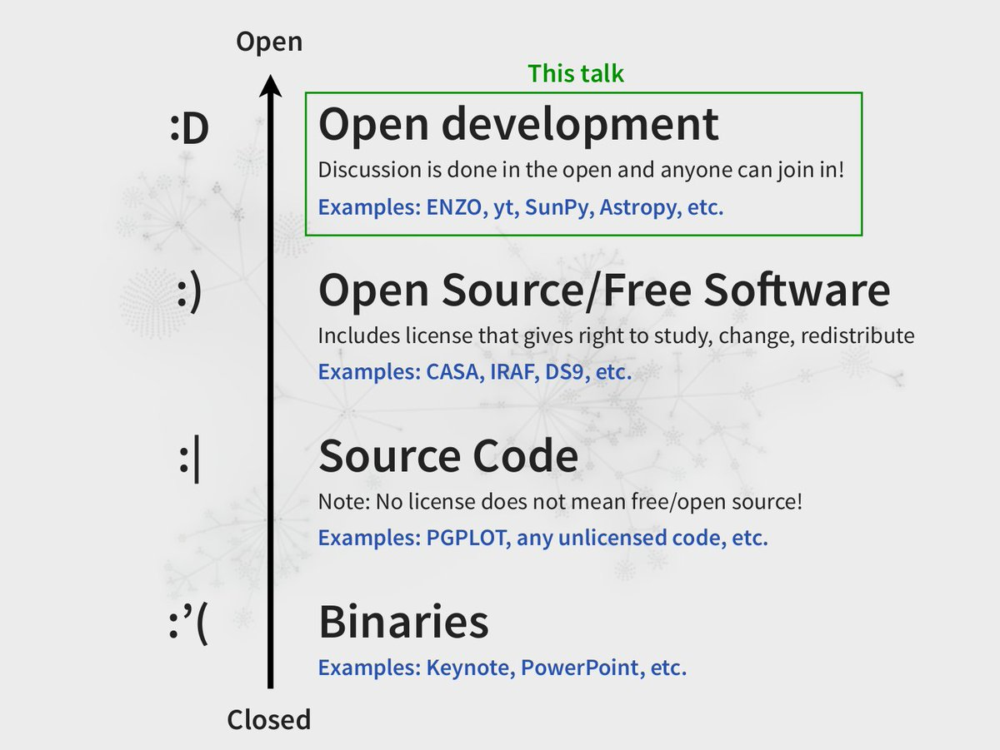
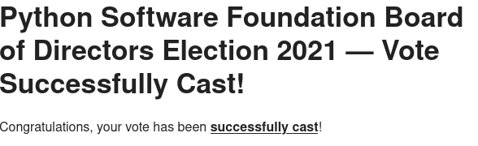
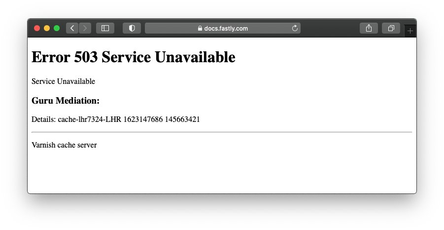
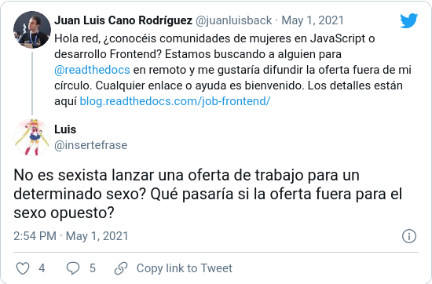
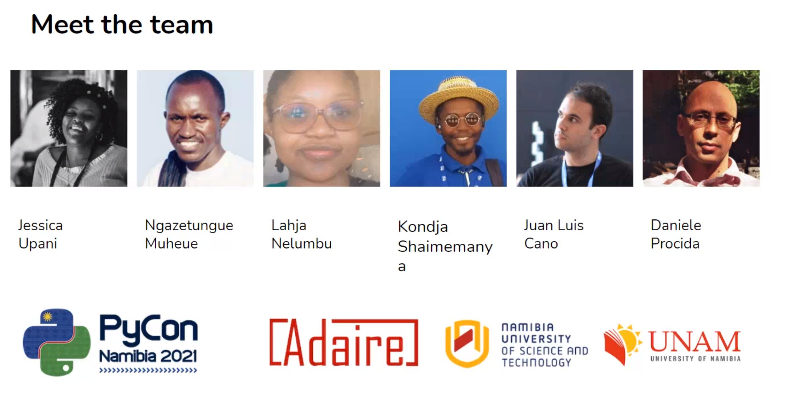

I spent some time looking for good "conda solving environment" memes, and this one is a gem 😂 https://twitter.com/VeroLlorens/status/1391794430093451268
Results are in! :)
`.venv` wins by a landslide, but the majority uses "other", or a tool that handles this for them (conda, fades, pyenv, whatever) https://twitter.com/juanluisback/status/1399375962228224005
Replying to @fisadev
Yeah, absolutely 😅 What's your personal preference? :)
Replying to @anacondainc and @ZDNet
"Python probably doesn't have a future in the browser despite WebAssembly", and yet how can this interview not even mention the efforts by @PyBeeWare for mobile or Pyodide by @mozhacks for WASM?
Is @gvanrossum unaware of these projects? Or does he think they don't have a future?
RT @ericholscher: Excited to be speaking at @UpstreamOSS next week about bootstrapping a sustainable OSS project. This will cover the story…
@opensrcdesign Hello! We are looking for a UI/UX person with Frontend/JavaScript skills (or a Frontend Developer with good design skills and experience) to join our team, would this sort of position be a good fit for your community and your job board? Thanks a lot!
RT @PyConNA: Here's our draft programme of talks, workshops and other events. https://na.pycon.org/programme/
Please note: exact times are still pr…
Replying to @drvinceknight, @UKPython and @readthedocs
Hi! Read the Docs can also do a `pip install .`, apart from using requirements.txt. You have more info in our docs https://docs.readthedocs.io/en/stable/config-file/v2.html#packages
In any case, pip-tools rocks, and I'm glad it helped you find a solution for the problem!
Replying to @drvinceknight, @UKPython and @readthedocs
My pleasure! If it's not clear how to do it, it's a documentation bug :) so feel free to report it!
Replying to @opensrcdesign
This was very helpful, thanks a lot. We are weighing our options at the moment, might get back to you soon.
Replying to @jtpio and @PyDataParis
:O This is awesome! Do you think it's ready for teaching basic Python and pandas already? And reading some small .csv files perhaps?
Replying to @jtpio and @PyDataParis
well I... spotted a few bugs :) Hope I have to report them. Looking forward to seeing this project mature soon!
Replying to @jtpio and @PyDataParis
Hope I have *time to report them
RT @readthedocs: We've just published our June newsletter. It covers what is happening with the company, and the projects that the team is…
For a talk I'm giving about how to engage _nicely_ with open source projects, I'm collecting examples of the opposite: entitled users yelling online, people demanding free labor, and other nasty things.
What are your "favorite" examples?
Replying to @scaramagus and @bagder
Wow this is... so unsettling
Replying to @choldgraf
WHY U NO SUPPORT MARKDAUN
Replying to @di_codes
Congrats! What are the implications of a project joining the PyPA?
I have lost count of how many times I've clipped this slide by @astrofrog - it's one of my favourite slides, ever!

Replying to @juanluisback
Source: https://speakerdeck.com/astrofrog/the-rise-of-python-and-the-open-development-revolution-in-astronomy?slide=5
Replying to @pradyunsg
*cough* Amazon *cough*
Replying to @reydelhumo and @choldgraf
"RTD doesn't work in the IBM mainframe I inherited from my grand-grand-grandfather, this project sucks"
Replying to @Cesar_ti and @_axtone
Y antes de eso, teníamos a Freddy en Cristalab... Flash sí que murió 😅 (ahí di mis primeros pasos en programación, qué tiempos)
RT @reydelhumo: Visiten https://hablemospython.dev/ para enterarse de todo lo que deben saber sobre las candidaturas de les hispano-parlates pa…
RT @ericholscher: My talk at #UpstreamOSS is coming up in ~10 mins. It's free to watch if you're curious about the sustainability story aro…
"A how-to solves a problem your users have, a tutorial solves a problem you want your users to have"
@emckean at #UpstreamOSS
RT @ericholscher: Love seeing @emckean's talk about docs at #UpstreamOSS. I always enjoy #writethedocs conferences, but it's super importan…
RT @reydelhumo: 💪 LATAM 💪

So Anaconda 2021.05 Individual Edition is out and @anacondainc didn't say a thing?? Get it while it's hot! https://www.anaconda.com/blog/individual-edition-2021-05
Looking forward to using JupyterLab 3 with my students!
RT @_JacobTomlinson: Lessons learned today, don't host your service status page on your own service.

RT @anacondainc: We could not have gotten to where we are today without the community of #OpenSource developers, stewards, and trainers. La…
RT @TiffanyTimbers: As I increasingly do more & more collaborative writing using version control, I am feeling more & more strongly about s…
Replying to @starakaj
I feel attacked 😂
RT @MasterUah: Solo quedan 21 días 📅 para apuntarse a la edición 2021-2022 del @MasterUah y queremos que conozcáis las 5 últimas incorporac…
YouTube removed another of my all-time favorite videos 😭 A wonderful 2-hour continuous mix of Sirens of the Sea by @aboveandbeyond. Fortunately, I anticipated this, so I downloaded it as mp3 a long time ago. However, I lost the tracklist, and can't easily share it with friends.
Replying to @juanluisback
I've listened to it on almost all my international flights, I play it when I want to relax, I play it when I want to focus... I saved it for myself, but I'm so sad it's gone. And it's not the first time it happens.
Leaving here just one of the tunes: https://youtu.be/oRdWmGJuG9g
Replying to @juanluisback
This makes me so angry. And yet, what is the alternative? The Internet promised us a decentralized world where we could enjoy the "long tail" of content and art. But then we centralized it around companies like @YouTube that only care about making the shareholders happy.
😞
Replying to @aasensior and @aboveandbeyond
All the songs are there, but what I really enjoyed was the flow of the mix, every song smoothly transitioning into the next, tension gradually building up over 2 hours, the climactic moments.
It's very difficult to describe, it is just so good (listening to it right now again!)
Something similar happens to me when reading the MyPy docs. I mean... what the hell does contravariant/covariant mean? Just give me an example that doesn't need me to get a PhD. https://twitter.com/dabeaz/status/1402562309126512643
"Citations" are similar to "proof of work" in cryptocurrencies: a stupid incentive model that produces mostly useless results for the sheer benefit of a tiny bunch of stakeholders.
Maybe some day we'll invent something better. https://twitter.com/page_eco/status/1402252253407236096
Replying to @pganssle
It was a bad metaphor, yes :)
Replying to @pganssle
In my defense, I said "similar", not "equivalent" 😛
RT @PyConNA: PyCon Namibia 2021 is next week, 18th-19th June, online!
Programme of speakers from all around the world: https://t.co/lz80Aw…
RT @readthedocs: We released sphinx-hoverxref v0.6b1 with support for intersphinx. Read more in our blog:
https://blog.readthedocs.com/hoverxref-intersphinx/
#sphinx…
RT @ericholscher: We're trying to think of ways to get more publishers on @ethicaladsio -- folks who have medium to high traffic dev-focuse…
Replying to @aasensior and @aboveandbeyond
I love Group Therapy ❤️ It's the best thing of Friday evenings at home
RT @fperez_org: Great writeup of a major advance in @ProjectJupyter that we're super excited about. Looking forward to a fully open-source,…
This PEP also contains an excellent introduction to several packaging terminologies and problems. It's a delight to read :) https://twitter.com/gjbernat/status/1403456641924833288
Finally 😭😭😭 https://twitter.com/martinRenou/status/1404345440817057797
Replying to @ralfgommers
In cases like these, my only hope is `conda install --revision N` http://blog.rtwilson.com/conda-revisions-letting-you-rollback-to-a-previous-version-of-your-environment/
RT @choldgraf: For infrastructure in open scholarship, what is the biggest deciding factor for you?
RT @choldgraf: An important lesson I've taken from the Freenode debacle:
✨It's not an open project without open and inclusive governance.✨…
Replying to @jacobian
This is endemic to so-called "left" parties in other parts of the world apparently... A war of small gestures, while disadvantaged people keep struggling to survive.
"When submitting a pull-request, women have high rates of merge acceptance, and lower when they explicitly identify themselves as women" https://twitter.com/melissawm/status/1404939686511099907
Replying to @sofisdev and @tonydev_
Hay muchísimo hombre de las cavernas suelto, se ve en redes sociales todos los días.

Replying to @tonydev_ and @sofisdev
Me he hecho viejo y ya no discuto sobre estas cosas en Twitter. Hay mucho material de lectura online, por si quieres salir de la caverna.
RT @PyConNA: Our speaker Sam Simataa has very generously sponsored USD 100 worth of tickets for students to PyCon NA - if you'd like a free…
RT @eLife: We’re excited to introduce a new approach to publishing in medicine.
We will bring rigorous, consultative review and expert edi…
Replying to @HenrySchreiner3
How did you discover trampolim? I discovered it because of you, don't see it mentioned on the Python discourse or here on Twitter 😅
PyCon Namibia will always have a special place in my heart. Missing you a lot from the distance ❤️ and looking forward to the moment we can meet in person again.
If you want to attend online, register now! https://na.pycon.org/tickets/ https://twitter.com/PyConNA/status/1405442983781179396
I get that complaining online is very cheap, but I'm not even asking you to "write a better tutorial" or "open an issue": just include _what_ do you find so frustrating in your Twitter rant. Easy peasy, and gives the opportunity to folks that want to do something about it. https://twitter.com/dabeaz/status/1405310174995361795
Replying to @mnt_io
I disagree. Too vague. Duplicating projects *may* or *may not* help the ecosystem. Communities, on the other hand, can't be duplicated.
If project A makes contributing difficult, a fork will occur, or the project will die. In this case, "duplicating" helps the ecosystem.
I never thought I would say this but...
Today I *love* pulseaudio
Replying to @juanluisback
And this is the reason: https://gist.github.com/varqox/c1a5d93d4d685ded539598676f550be8
"You have to be pure in terms of your why. Your why should be selfless, should never give up and should be willing to sacrifice one's personal gains for the good of the community."
Thanks for inspiring us @JessicaUpani ❤️ https://twitter.com/honzajavorek/status/1405532488504516617
Replying to @juanluisback
And thanks @honzajavorek for this wonderful interview! Too bad I didn't go to PyConNA 2020. Hope we can meet in 2022, or some other event :)
Replying to @rrandolphjr
A few by early Fleetwood Mac (Albatross, When You Say), Drop Zone by Darren Styles, Chilmil by Oui Lele & made of love by ocha, Contigo by Exquirla, many more
¡Este me lo voy a escuchar seguro! 🙃 https://twitter.com/Python_PodCAST/status/1405646474168442884
Replying to @OriolAbril
It's an excellent question, and I don't see it answered in the documentation https://www.sphinx-doc.org/en/master/usage/extensions/viewcode.html maybe the best place to ask would be https://groups.google.com/g/sphinx-users ?
RT @cmaureir: ¡Ya están los resultados de las elecciones de @ThePSF! Los tres cupos serán ocupados por mujeres de Africa y ¡Latinoamérica!…
Replying to @stsewd
Wow, that's indeed very scary 😱 But at the same time, I'm not surprised either...
RT @fmasanori: Thanks to everyone who made @PyConNA possible, as well as all the attendees.

Replying to @agjhnsn
pacmd load-module space-station 😂
RT @MissingClara: pypa/build 0.5.0 released 🎉 a few breaking changes were introduced in this version, the only one relevant for users being…
The only correct way to talk about The Orange Site. @di_codes, by making this 200 % accurate summary, has however had to *read through all the comments himself* and as a result, has probably lost a handful of neurons.
Dustin is the hero we need, but didn't deserve. https://twitter.com/di_codes/status/1406316038023782407
Replying to @AdamChainz and @MissingClara
I can wheel your excitement!
Replying to @Python_PodCAST
¡Sip, flit tiene `flit build` también! Pero para eso mejor usar https://pypa-build.readthedocs.io/
Replying to @AdamChainz
Sort of :) "Back to business", trying to make myself useful for my readers, while at the same time staying away from things that harm my mental health. Spending less time on Twitter in general. It's been a few months and so far it's working, so I'm happy!
TIL about {margin} notes in MyST, they look awesome 😱 @choldgraf are these JupyterBook-specific? Or is it up to the Sphinx theme to properly render them? Or perhaps this already existed in reST? 😅
Replying to @juanluisback
xref: https://github.com/executablebooks/jupyter-book/issues/1297#issuecomment-864256885
RT @abadal: La evaluación científica no debe basarse en el factor de impacto de las revistas: carta publicada con Emilio Delgado e @IsmaelR…
RT @simon_on_energy: Chinese regional government bans bitcoin mining, electrical demand reduces by 8 GW.
That's 2-4 modern nuclear plants,…
Replying to @choldgraf
I see, thanks! I agree this might not work for all themes, but in particular, sphinx_rtd_theme has a lot of unused space on the right, so it would be a great fit. The challenge is how to "gracefully degrade" that, I guess
"Todo ser que intente ser libre necesita límites y órdenes para sentirse más libre" — @ElcheNinode
https://youtu.be/Y_dGwo7sov4
Replying to @choldgraf
I would be able to give a more informed opinion if I knew anything about responsive web design, but I think I haven't written a line of HTML, CSS, or JavaScript in 10 years 😅
Replying to @choldgraf
Sounds reasonable! There's one (minor?) thing that needs a bit more work though: what to do with the margin content if it doesn't fit horizontally. Just checked on https://jupyterbook.org/content/layout.html#margin-content and the view becomes unusable at 768 px wide. But I don't know what would I expect here.
Replying to @quesememe, @LosPlanetasGr and @nochesbotanico
Te he comprado una 🙏🏼 ¡Gracias!
Replying to @DynamicWebPaige, @StackOverflow, @PSF, @kaggle and @anacondainc
Thanks a lot for this work, it's truly useful! I'm confused about version control though: did a quick `Ctrl+F` on the Kaggle survey and found nothing, and the summary of the Anaconda survey doesn't mention anything either. Could you elaborate a bit more on this?
This and, as @ashkamath20 says below, open sourcing the code and the model parameters.
The question is then: when will the other fields of science catch up? https://twitter.com/ylecun/status/1406450582072741889
RT @jmayer: If you are interested in contributing to #Python open-source projects, Pelican plugins are a great place to start. They are sma…
RT @nicolaskruchten: Today we have released version 5.0 of Plotly for Python, @plotlygraphs' flagship data visualization library! 🎉 Highlig…
Replying to @zachorsarah
Sounds intriguing! How can we stay tuned? :)
Replying to @pathunstrom
I beg to disagree :) It's trivial to launch a @mybinderteam with a Jupyter notebook or JupyterLab environment to learn Python (I do this every day for teaching, the computer I use in the lab only has a browser and nothing else).
Replying to @valerybriz
Supongo que es una referencia a esto https://en.wikipedia.org/wiki/I_Sexually_Identify_as_an_Attack_Helicopter
RT @di_codes: The growing trend of trying to profit off @pypi's weaknesses as a non-profit and volunteer-run project instead of helping imp…
Replying to @shoyer, @poliastro_py, @MaNepal73113320 and @GoogleAI
Thanks a lot for the follow-up! (Now replying with my real face instead of from @poliastro_py 😀)
RT @Lottewilms: Interesting to see all the different ways in which software is referenced in academic papers. Slide by Neil Chue Hong of @S…
When I thought I knew how Jupyter notebooks in HTML worked... I was tasked with documenting it 🙃
Replying to @marianomugana
Glad to know you're doing well now! We missed you at @PyConNA :) All the best!
Just registered to #SciPy2021 @SciPyConf 🥳 Can't wait!
I am thinking about proposing a "Documentation Sprint", what do folks think?
cc @choldgraf @WillingCarol @melissawm
Replying to @nicholdav, @SciPyConf, @choldgraf, @WillingCarol and @melissawm
Thanks! Should I wait a bit then before proposing it as a "normal" sprint? :)
Replying to @choldgraf, @nicholdav, @SciPyConf, @WillingCarol and @melissawm
Interesting! https://docathon.github.io/zero_to_docs/
Replying to @nicholdav, @SciPyConf, @choldgraf, @WillingCarol, @melissawm and @jnuneziglesias
I see one up online already! https://www.scipy2021.scipy.org/sprints in any case, no rush - you're not the only one _ahem_ procrastinating on Twitter 😅
Replying to @melissawm, @choldgraf, @nicholdav, @SciPyConf and @WillingCarol
🙌🏼
Replying to @choldgraf, @nicholdav, @SciPyConf, @WillingCarol, @melissawm and @UCBIDS
Awesome! Will have a look at this over the next few days, we can surely extract valuable stuff from it 💪🏼💪🏼
Replying to @nicholdav, @SciPyConf, @choldgraf, @WillingCarol, @melissawm and @jnuneziglesias
Of course, count on it! At @readthedocs we are super interested in getting more people talking about documentation in scientific circles. We saw that there are no talks about it at #SciPy2021, so we wanted to add some :)
Replying to @alexdesiqueira, @SciPyConf, @choldgraf, @WillingCarol and @melissawm
With this endorsement, now I can't *not* do it 😍
Replying to @dopplershift
Lately I've been reading posts similar to these... I'm starting to think that I might have undiagnosed ADHD!
Replying to @webology
I repeated the poll a month ago, `.venv` still wins https://twitter.com/juanluisback/status/1399375962228224005
RT @unnombrealazar: Un informe de las Academias de la Ciencia, la Ingeniería y la Medicina de EE UU concluye que la academia ostenta la seg…
RT @ThomasBauwens1: Impact factor abandoned by @UtrechtUni in hiring and promotion decisions. Every department will judge its scholars by o…
RT @poliastro_py: poliastro 0.15.2 is out! We fixed the compatibility with astroquery and updated the @plotlygraphs version constraint so y…
One of my students from @ieHST participated. I'm so proud! 💪🏼 https://twitter.com/reshamas/status/1408841488482590721
Unpopular opinion:
The GIL doesn't matter. https://twitter.com/HenriquesLab/status/1409144578603733002
RT @poliastro_py: Finally, our Constellation Designer proof of concept is available!
https://gitlab.com/astrojuanlu/constellation-designer/
Our report will be published…
Feature request for @Twitter : if someone quote-tweets an account that I muted, I don't want to see the quote either.
Bonus points if done with screenshots too (I heard that machine learning got pretty good at this)
Replying to @DrChambersJD
Yes! And yet, I read so many rants against Python because of the GIL, most likely from people that have never been blocked by it.
RT @writethedocs: Last chance to submit your proposal for the Prague conference! The CFP will close on June 30th at midnight CEST. Check ou…
RT @lexfridman: All scientific articles should be free and accessible to everyone.
Replying to @codinghorror and @lexfridman
Not sure if a good joke or a terrible take
Replying to @pganssle, @gjbernat and @MissingClara
Harsh words to put on Twitter. I get that you're venting frustration here, but still this can be very damaging.
RT @emmy_ft: Governance conversations are HARD (& typically considered boring), but too many people/projects got hurt b/c decision-making p…
RT @SciPyConf: We’re just two weeks away from #SciPy2021! Remember to register so you don’t miss out on your chance to attend this year's c…
RT @jezdez: Hey all, my team at @anacondainc is looking to hire a Sr. Software Engineer to work on the package manager Conda. Think Homebre…
RT @daniel_huppmann: And ... we made an effort to follow #bestpractice of #opensource collaborative #scientificsoftware development.
CI/CD…
Replying to @daniel_huppmann, @github, @codecov, @groupsio, @SlackHQ and @readthedocs
Great job! 👏🏼
Replying to @christi3k
TIL about Harmonizely, interested in CalDav support as well. Thanks for sharing!
RT @jacobian: On Github Copilot and IP/©:
1️⃣ it's not at all clear it's a © violation
2️⃣ it's not at all clear that it's not
3️⃣ "is/is…
Every Wednesday I get caught off-guard by this tweet, and every Wednesday I cackle 😂 https://twitter.com/whataweekhuh/status/1410188613954981891